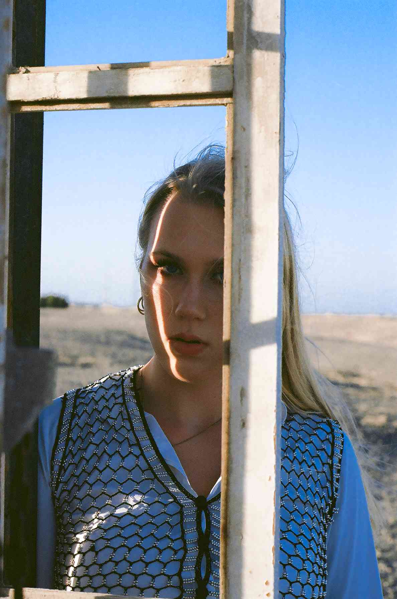
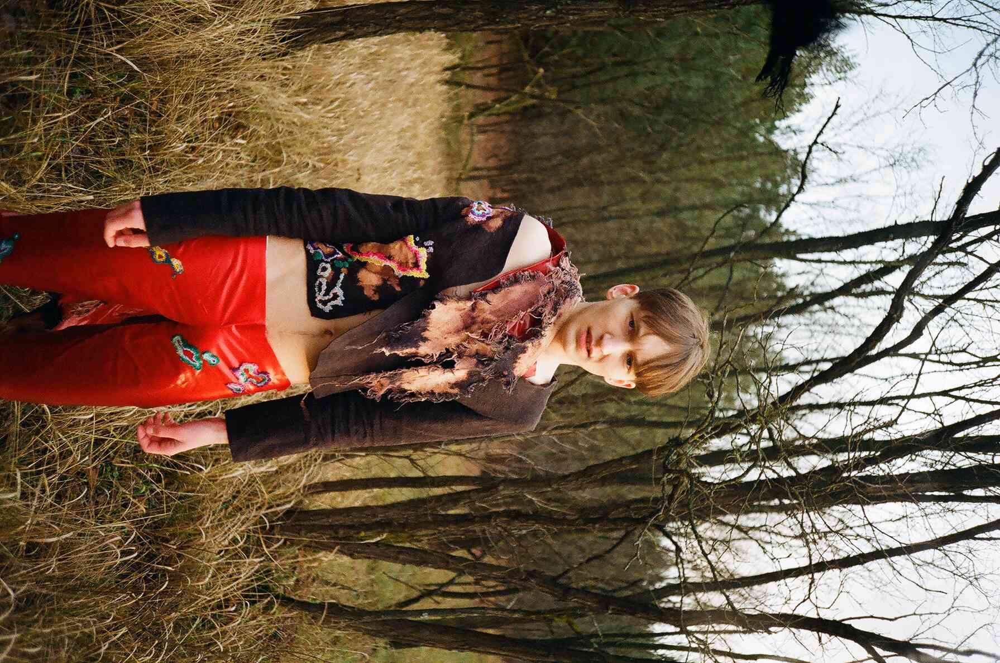
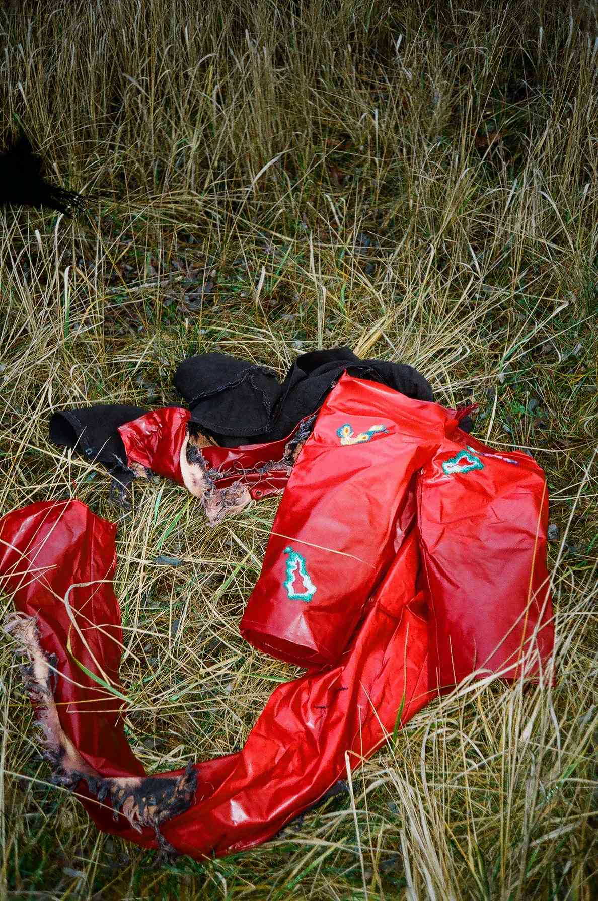
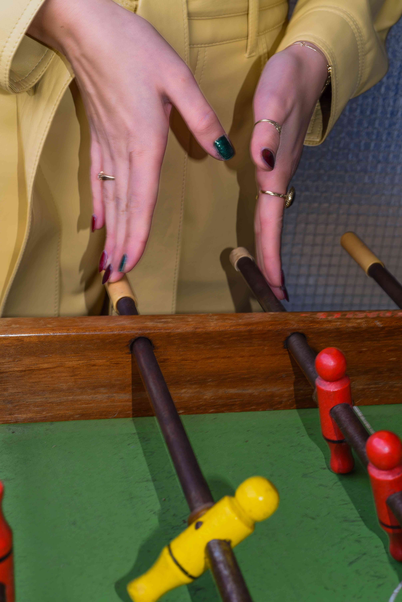
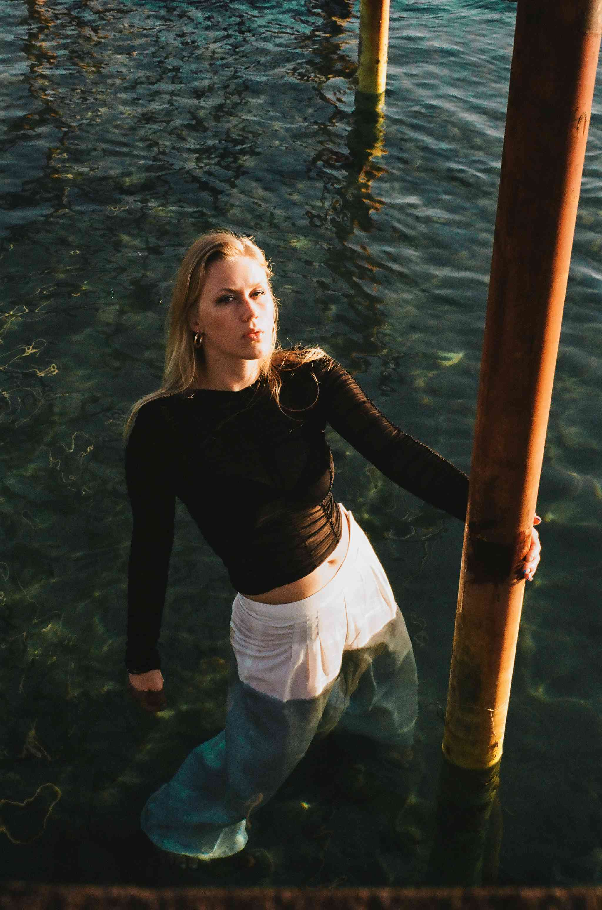

Being born and raised in Warsaw and having moved to Amsterdam for my
studies, I do believe I was able to observe the best of both worlds -
inimitable dynamics from the former and a certain eclecticism from the
latter.
In the process of new encounters and experiences, I realised I wanted to
combine my current degree with a creative outlet and I believe that becoming
an intern at Glamcult would be a perfect fusion of those two sides.

>
What could I bring
to a company
like Glamcult?

Strong social skills
My well-developed interpersonal skills, helped me obtain a job at a summer
camp in England as an Activity Leader. This may seem like having little in
common with being a Marketing and Communication at first, but it did require
a similar set of skills. Being able to make and maintain contact with
people, regardless of their age and origin is just one example of this.

I am currently an International Business Administration student at the
Erasmus University, but I use
photography and editing as my creative funnel,
to which I dedicate most of my free time.
That, for example, gave me a chance to work with an Amsterdam based clothing
boutique, Velour, for whom
I conducted a home photoshoot
as a part of their garment promotion on social media, predominantly on
Instagram.

By studying subjects such as Marketing Management, I was able to gain the
theoretical knowledge behind promoting and communicating product value and
now I would love to put that knowledge into practice.

JOINING THE GLAMCULT TEAM WOULD BE
A GREAT ADVENTURE
AN EXCELLENT OPPORTUNITY TO GAIN HANDS-ON EXPERIENCE
I AM
DETERMINED TO WORK MY HARDEST TO CONTRIBUTE TO THE TEAM’S SUCCESS